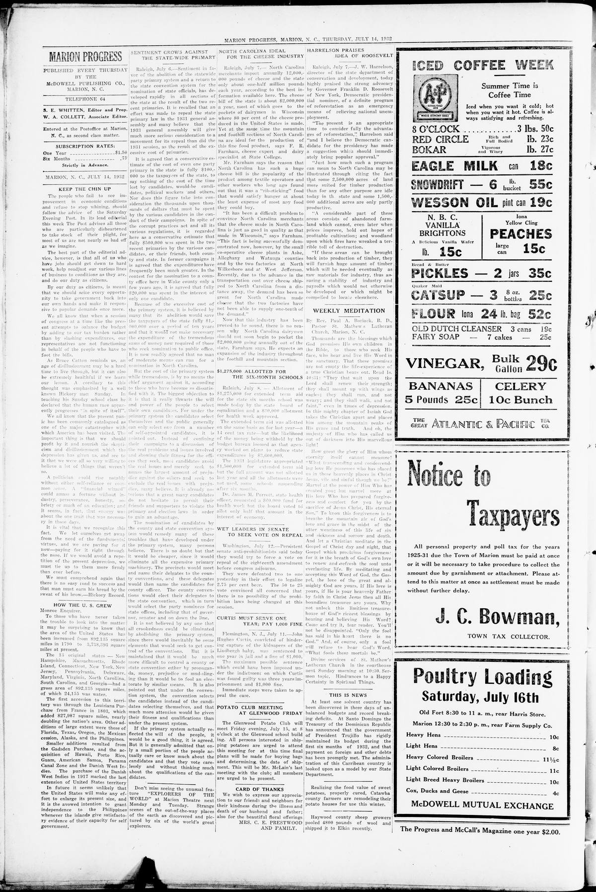

This Is NewsEsto Es Noticia
Marion Progress. Marion, N.C., July 14, 1932. Page 4. Published by McDowell Pub. Co. A weekly newspaper.Marion Progress. Marion, N.C., 14 de julio de 1932. Página 4. Publicado por McDowell Pub. Co. Periódico semanal. View the originalVer el original

Under the heading This Is News, the paper notes that the Treasury of the Dominican Republic announced that President Trujillo's government had rigidly maintained its budget during the first six months of 1932 and that payment on foreign and other debts had been promptly met. It adds that the administration of this Caribbean country was looked upon as a model by the United States State Department.Bajo el título This Is News, el diario señala que la Tesorería de la República Dominicana anunció que el gobierno del presidente Trujillo había mantenido rigurosamente su presupuesto durante los primeros seis meses de 1932 y que el pago de las deudas externas y otras obligaciones se había cumplido puntualmente. Añade que la administración de este país caribeño era considerada un modelo por el Departamento de Estado de los Estados Unidos.
FULL TEXT:TEXTO COMPLETO:
THIS IS NEWSESTO ES NOTICIA
At least one solvent country has been discovered in these days of unbalanced budgets and record breaking deficits. At Santo Domingo the Treasury of the Dominican Republic has announced that the government of President Trujillo has rigidly maintained its budget during the first six months of 1932, and that payment on foreign and other debts has been promptly met. The administration of this Carribean country is looked upon as a model by our State Department.Al menos un país solvente ha sido descubierto en estos días de presupuestos desequilibrados y déficits récord. En Santo Domingo la Tesorería de la República Dominicana ha anunciado que el gobierno del presidente Trujillo ha mantenido rígidamente su presupuesto durante los primeros seis meses de 1932, y que el pago sobre deudas extranjeras y otras ha sido prontamente cumplido. La administración de este país caribeño es considerada como un modelo por nuestro Departamento de Estado.
This collection gathers the coverage of the Dominican Republic in the American press, in the order it was published.Esta colección reúne la cobertura de la República Dominicana en la prensa estadounidense, en el orden en que se publicaron.